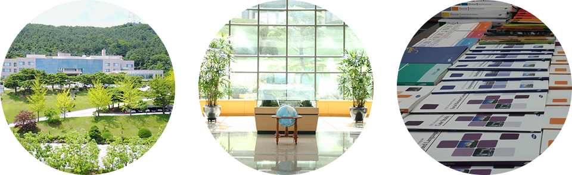

외국어생활관 소개

외국어생활관은 1982년 삼성의 글로벌 비즈니스를 견인할 전문인재 양성을 위하여 삼성인력개발원에서 시작된 외국어 집중훈련
글로벌 비즈니스 현장에서 바로 쓸 수 있는 실제 비즈니스 커뮤니케이션 역량 향상을 목적으로, 외부 어학기관에서는 찾아볼 수 없는 독보적인 컨텐츠와 어종별 전담 강사를 보유하고 있습니다.
또한 모든 어학 컨텐츠는 직무 맞춤형으로 자체 개발된 컨텐츠로, 매 과정이 끝날 때마다 현장 적용에 대한 수료생의 피드백을 받아 지속적으로 업데이트 되고 있습니다.
외국어생활관 프로그램은 교육대상, 어학수준, 학습 목적별로 과정이 기획, 개발, 운영되며, 매년 약 1,300여명의 주요기업 임직원분들이 외국어생활관 교육을 받고 글로벌 현장에 투입되거나, 각 기업의 글로벌 핵심인력 후보군으로 양성되고 있습니다.
Tell me, and I’ll forget.
Teach me, and I may remember.
Involve me, and I learn
외국어생활관에서는 일방적인 강의, 어학평가만을 위한 암기식 교육을 하지 않습니다.
Task-based 교수법을 바탕으로, 모든 교육생들은 비즈니스 상황별 시뮬레이션을 통하여 실제로 말해보고, 과제를 직접 수행하고 전문강사의 피드백과 코칭을 받으며 글로벌 커뮤니케이션 기술을 습득하고 제대로 활용토록 지원하고 있습니다.
외국어생활관 만의 독보적인 실무 글로벌 커뮤니케이션 역량교육을 통하여 귀사의 글로벌 사업에 믿음직한 파트너가 되겠습니다.